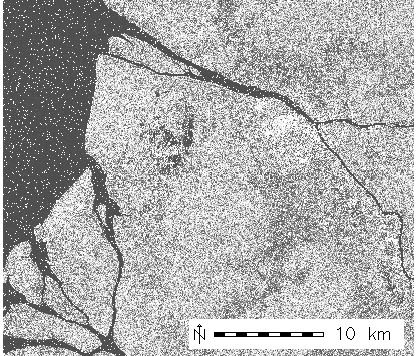
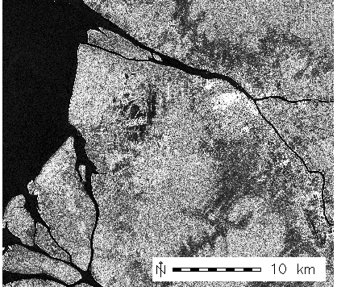

g.region rast=PASL1500605241533341106080000_2006 -p
i.despeckle PASL1500605241533341106080000_2006 \
out=PASL1500605241533341106080000_2006.gamma3
|

PALSAR image before despeckling |

PALSAR image after despeckling |
Last changed: $Date$